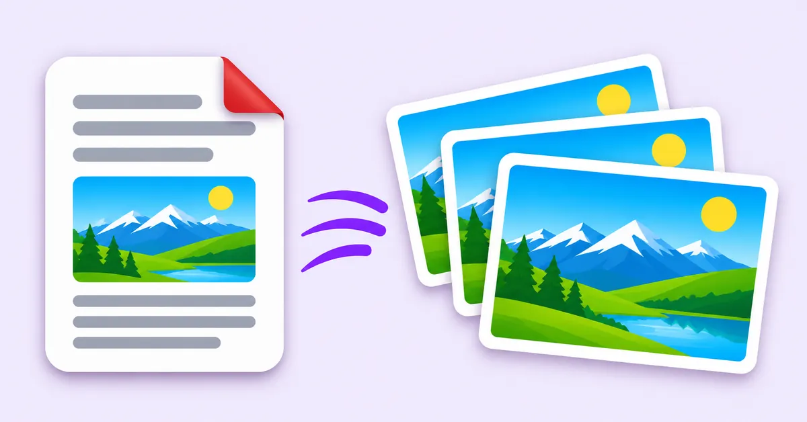
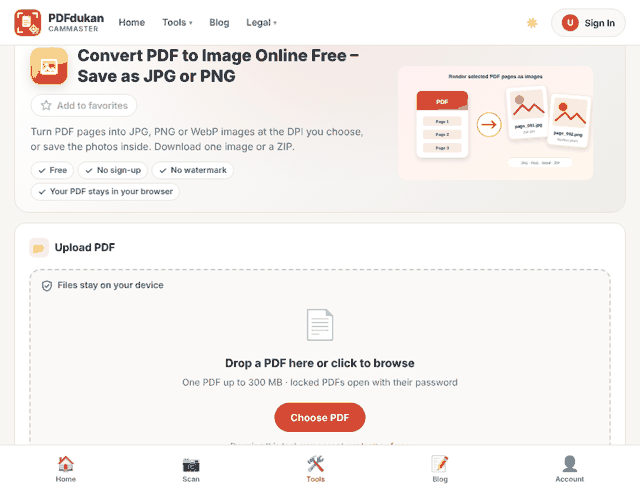
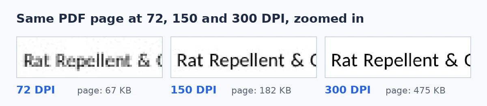

Convert PDF to JPG Free in High Quality (Tested)
To convert PDF to JPG free in high quality, render each page at 200–300 DPI with JPG quality near 90%. Use 300 DPI for print and 150 DPI for email or web. A browser-based converter does this without an upload, a watermark or an account.
Try the free PDF to JPG converter. Your PDF stays in your browser.

How do you convert PDF to JPG free in high quality?
A high-quality PDF to JPG conversion takes four steps in the PDFdukan converter. The settings in step three decide the sharpness.
- Open the converter and add one PDF, up to 300 MB.
- Pick the pages you need, or keep all pages selected.
- Choose JPG, a resolution and a quality. The default is 200 DPI at 90%.
- Convert, then save one image or download every page as a ZIP.

The converter also has an "Images inside the PDF" mode. That mode saves the photos and logos on a page at their own size, instead of the whole page.
What DPI should you choose for PDF to JPG?
The right DPI depends on where the JPG will be used: 150 DPI for screens, 300 DPI for print. We converted the same one-page A4 PDF at five settings, all at 90% JPG quality.
| DPI | Image size | File size | Good for |
|---|---|---|---|
| 72 | 595 × 841 px | 67 KB | Thumbnails, quick previews |
| 150 | 1240 × 1753 px | 182 KB | Email, web, chat apps |
| 200 | 1653 × 2338 px | 279 KB | Clear text on any screen |
| 300 | 2480 × 3507 px | 475 KB | Printing |
| 600 | 4960 × 7015 px | 1.24 MB | Large prints, fine detail |
The 300 DPI figure matches common print advice. iHatePDF calls 300 DPI the minimum for crisp printing and suggests 72 DPI for web and email.
Does a higher DPI always make a sharper JPG?
A higher DPI makes a sharper JPG only until the image has more pixels than the screen or printer can show. Past that point, the file just grows.

In our test, 72 DPI letters broke into visible blocks, while 150 DPI was already clean on screen. Moving from 300 to 600 DPI made the file 2.7 times larger. For a phone or a slide, that extra weight buys nothing.
Very large pages have a separate limit. Browsers cap how big an image can be, so the PDFdukan tool draws huge pages smaller and shows the size it used.
Should you save PDF pages as JPG or PNG?
JPG suits most PDF pages, while PNG suits pages that must stay pixel-perfect, such as diagrams or line art. JPG uses lossy compression, and PNG is lossless.
The size gap was smaller than many people expect. At 300 DPI, our page was 475 KB as JPG and 493 KB as PNG. Lowering JPG quality from 90% to 75% cut the file to 355 KB.
A JPG of a text page is a picture of text. You cannot select or copy words from it. For editable text, use PDF to Word or OCR instead.
Is it safe to convert PDF to JPG online?
Converting PDF to JPG online is safe when the tool renders pages in your browser, because the file never reaches a server. Upload-based tools rely on deletion policies instead.
Smallpdf, for example, says it deletes files one hour after processing. During our test of the PDFdukan converter, the browser sent zero upload requests across eight conversions.
Frequently Asked Questions
How do I convert PDF to JPG free in high quality?
Choose 200–300 DPI and keep JPG quality near 90%. Use 300 DPI if you will print the image. Browser-based tools do this free, without signup.
Can I convert only one page of a PDF to JPG?
Yes, you can convert a single page. In the PDFdukan tool, tap Save under that page's preview, or type its number in the Pages box.
Can I convert all pages at once?
Yes, every selected page becomes its own JPG. Several pages download together as one ZIP. Our 16-page test PDF became 16 images in one ZIP.
Is 600 DPI better than 300 DPI?
600 DPI is better only for large prints or close zooming. For screens and normal prints, 300 DPI looks the same. The 600 DPI file in our test was 2.7 times larger.
Why is my JPG blurry after converting?
A blurry JPG usually means the DPI was too low, often 72. Convert again at 200 DPI or higher. Blur can also come from a low-quality scan inside the PDF.
Does converting PDF to JPG add a watermark?
The PDFdukan converter adds no watermark. Free converters differ, so check the first image before you convert a long document. A clean result should look exactly like the page.